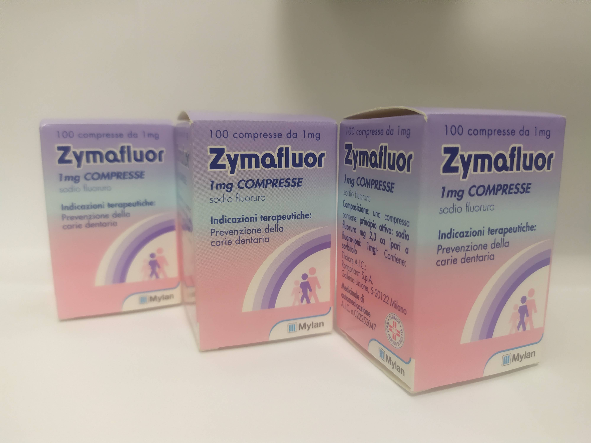

Заронтин-(Zarontin)
Заронтин или Суксилеп – оказывает противосудорожное действие, проявляющееся при малой форме эпилептических припадков Также эффективен при приступах миоклонического характера. Действие Заронтина обуславливается процессом угнетения моторного центра в коре головного мозга, повышением судорожных порогов. Препарат Заронтин не влияет на уровень концентрации кислот в ЦНС при применении согласно инструкцией в терапевтических дозах.Снижает частоту вероятности возникновения малых припадков, судорожных эпилептиформных состояний, подавляет пароксизмальную активность ЭЭГ, характерную при абсансах, что сопровождаются нарушением сознания. Заронтин эффективен в состояниях миоклинических приступов. В полном Объеме терапевтического эффекта проявляется в период до 8 недель.

Цена: 999 грн/уп.
Колхицин(Колхицын)-(Colchicine)
Действующим веществом лекарственного средства Колхицин Лирка является колхицин - алкалоид, экстрагированный из семян безвременнику осеннего, травянистого растения, принадлежащего к семейству лилейных.Экстракт этого растения имеет диуретические, анальгетические и противовоспалительные свойства, поэтому его применяют при ревматизме, артрите и, особенно, как противоподагрическое средство.Хотя механизм противоподагрического действия колхицина полностью не выяснен, считают, что препарат уменьшает воспалительную реакцию на отложение кристаллов мононатрия урата в тканях благодаря способности подавлять метаболизм,подвижность и хемотаксис полиморфноядерных клеток и/или других функций лейкоцитов. Колхицин также оказывает непосредственное влияние на отложение мононатрия урата путем уменьшения образования молочной кислоты полиморфноядерными лейкоцитами и опосредованно – путем угнетения фагоцитоза.

Цена: 410 грн/уп.
Ируксол-(Iruxol)
Ируксол (IRUXOL) - это уникальное средство для лечения острых хронических и труднозаживающих ран, наружного применения. Основным компонентом препарата является коллагенез, ферменты которого эффективно расщепляют некротические ткани, гнойные массы, струпья и в следствии активизируются процессы заживления, грануляция и эпителизация раны. Антибактериальные свойства Iruxol обеспечивают наиболее хорошее микроклимат в ране, для скорейшего заживления и защиты от новых инфекций.

Цена: 630 грн/уп.
Сайтотек,Мизопростол-(Cytotec,Читотек)
Гастропротекторное средство синтетический аналог PgE1. Увеличивает образование защитной слизи и гидрокарбоната; способствует усилению кровотока в слизистой. Ускоряет заживление эрозий, язвы желудка и 12-перстной кишки, в ряде случаев способен предотвратить их образование. Препарат оказывает непосредственное влияние на париетальные клетки желудка, подавляет базальную, ночную, стимулированную (пищей, гистамином, пентагастрином) секрецию HCl. Уменьшает базальную (но не стимулированную гистамином) продукцию пепсина.

Цена: 750 грн/уп.
Зимафлуор(зимафлор)-(Zymafluor)
Каждый человек задумывается о здоровье своих зубов только тогда, когда они начинают болеть. И сожалеют о том, что вовремя не заботились о своих зубах. Дети не осознают своих проблем с зубами в раннем возрасте. Поэтому именно родителям нужно заботиться о здоровье зубов их ребенка еще с детства. Аптека "FarmItal" предлагает действенное, витаминное средство для детей - Зимафлуор (Zymafluor, зимафлуор). Своевременное употребление витаминов способствует развитию здоровых зубов у детей.Улучшает прочность зубов, устойчивость к температурным перепадам и предупреждает такие болезни как: кариес, гингивит, пульпит, периодонтит, гранулема (киста зуба). Медики акцентируют: зубы "любят" кальций, магний, цинк, фосфор, марганец, медь. Именно в витаминах Zymafluor содержатся все эти полезные вещества.

Цена: 750 грн/уп.
Ницетил-(Nicetile) таблетки
L-ацетилкарнитин является природным изомером вещества, которое в физиологических условиях присутствующего в организме в различных органах и тканях, в том числе в ЦНС, участвует в метаболизме жирных кислот и углеводов. При патологии оказывает нейропротективное действие, особенно по отношению к нейронам и их органеллам (митохондриям), а также как трофический фактор способствует восстановлению структуры клеток.

Цена: 1150 грн/уп.
Ницетил-(Nicetile) Cаше
L-ацетилкарнитин является природным изомером вещества, которое в физиологических условиях присутствующего в организме в различных органах и тканях, в том числе в ЦНС, участвует в метаболизме жирных кислот и углеводов. При патологии оказывает нейропротективное действие, особенно по отношению к нейронам и их органеллам (митохондриям), а также как трофический фактор способствует восстановлению структуры клеток.

Цена: 1050 грн/уп.
Плавикс №84 Польша-(Plavix №84 Poland)
Клопидогрель селективно ингибирует связывание аденозиндифосфата (АДФ) с рецептором на поверхности тромбоцита и последующую активацию комплекса GPIIb/IIIa под действием АДФ, и, таким образом, ингибирует агрегацию тромбоцитов. Для создание активного ингибитора агрегации тромбоцитов необходима био трансформация клопидогреля. Клопидогрель также ингибирует агрегацию тромбоцитов, индуцированную другими агонистами, путем блокирования повышения активности тромбоцитов высвобожденным АДФ. Клопидогрель не обратно связывается с АДФ-рецепторами тромбоцитов. Следовательно, тромбоциты, вошедшие во взаимодействие с стеклопидогрелем, повреждаются к концу их жизненного цикла, и нормальная функция тромбоцитов восстанавливается со скоростью, соответствующей скорости обновления тромбоцитов.

Цена: 999 грн/уп.
Плавикс №28 Турция-(Plavix №28 Turkey)
Клопидогрель селективно ингибирует связывание аденозиндифосфата (АДФ) с рецептором на поверхности тромбоцита и последующую активацию комплекса GPIIb/IIIa под действием АДФ, и, таким образом, ингибирует агрегацию тромбоцитов. Для образования активного ингибитора агрегации тромбоцитов необходима био трансформация клопидогреля. Клопидогрель также ингибирует агрегацию тромбоцитов, индуцированную другими агонистами, путем блокирования повышения активности тромбоцитов высвобожденным АДФ. Клопидогрель не обратно связывается с АДФ-рецепторами тромбоцитов. Следовательно, тромбоциты, вошедшие во взаимодействие с стеклопидогрелем, повреждаются к концу их жизненного цикла, и нормальная функция тромбоцитов восстанавливается со скоростью, соответствующей скорости обновления тромбоцитов.

Цена: 330 грн/уп.
Метергин-(Метилэргометрин) / Methergin(Metilergometrina)
Methergin используется в акушерстве:
Для лечения неполной инволюции матки (расширенная матка из-за слизи, крови и тканей, которые невозможно устранить), лохиометрии и послеродового кровотечения.
Methergin обладает метилергометрином как активное вещество, используемое как мощный стимулятор матки.
Метилергометрин является естественным полусинтетическим производным, алкалоидом спорыньи, эргометрином.
Это лекарство действует, вызывая сокращение мышц матки.
Предполагаемое время начала терапевтического действия составляет от 5 до 10 минут, когда препарат вводится перорально, а фармакологическое действие длится от 4 до 6 часов.

Цена: 500 грн/уп.
Ультрапрокт свечи-(Ultraproct supposte)
Флуокортолон оказывает противовоспалительное, против аллергическое и противозудное действие. Уменьшается дилятация капилляров, межклеточный отек и тканевая инфильтрация. Угнетается пролиферация капилляров. Препарат Ультрапрокт содержит два эфира флуокортолона, начало главного действия которых приходится на разное время, что позволяет быстро достичь эффекта и долго его поддерживать (двухфазное действие). Цинхокаин как локальный анестетик уменьшает болевые ощущения.

Цена: 420 грн/уп.
Ультрапрокт свечи-(Ultraproct supposte)
Флуокортолон оказывает противовоспалительное, против аллергическое и противозудное действие. Уменьшается дилятация капилляров, межклеточный отек и тканевая инфильтрация. Угнетается пролиферация капилляров. Препарат Ультрапрокт содержит два эфира флуокортолона, начало главного действия которых приходится на разное время, что позволяет быстро достичь эффекта и долго его поддерживать (двухфазное действие). Цинхокаин как локальный анестетик уменьшает болевые ощущения.

Цена: 420 грн/уп.
Дайвонекс мазь-(Daivonex unguento)
Синтетический аналог более активного метаболита природного витамина D3. Вызывает дозозависимое торможение пролиферации кератиноцитов (значительно повышенной у больных псориазом) и ускоряет их морфологическую дифференциацию. Незначительно влияет на метаболизм кальция в организме. Ингибитор активации Т-лимфоцитов, вызванной интерлейкином 1.

Цена: 480 грн/уп.